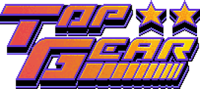

Top Gear é um jogo eletrônico de corrida desenvolvido pela Gremlin Graphics e publicado pela Kemco para Super Nintendo Entertainment System (SNES) em 1992. É o primeiro jogo da série Top Gear. O jogador corre em percursos espalhados por oito países, devendo chegar entre os cinco primeiros para alcançar o próximo nível